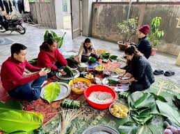
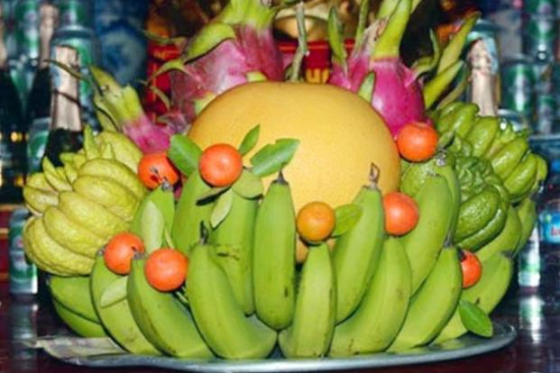

Giới Thiệu Chung
Trong những ngày cuối năm, không khí đón Tết bắt đầu trở nên sôi động, rộn ràng hơn bao giờ hết. Chính vì vậy, chúng tôi muốn gửi đến độc giả những nét đẹp tinh tế trong phong tục đón Tết Nguyên đán, nhằm mang đến cái nhìn sâu sắc hơn về truyền thống tốt đẹp trong văn hóa Tết của người Việt. Phong tục tập quán có thể hiểu là những thói quen hay chuẩn mực trong cuộc sống hằng ngày và được lưu truyền qua nhiều thế hệ. Đất nước Việt Nam có 54 dân tộc anh em cùng chung sống nên các phong tục tập quán Việt Nam cũng vì thế mà đa dạng không kém.Đáng tự hào hơn khi một số phong tục mang đậm nét văn hóa của dân tộc đã không ít lần được thế giới công nhận và vinh danh. Trong trang báo tường dưới đây, chúng ta sẽ cùng tìm hiểu qua một số phong tục tập quán đặc sắc của dân tộc để cùng nhau bảo tồn, lưu truyền và phát triển món quà thiêng liêng này của cha ông nhé!
Phong tục thả cá tiễn ông Táo về trời ngày 23 Tết
Theo truyền thuyết, Táo quân cưỡi cá chép về chầu Ngọc Hoàng vào ngày 23 tháng Chạp hằng năm. Cá chép được ví như loài "cá hóa rồng", "vượt vũ môn" và được coi là phương tiện di chuyển của các táo khi lên thiên đình. Tục thả cá chép mang ý nghĩa của sự thăng hoa, biểu tượng của tinh thần vượt khó, sự kiên trì, bền chí chinh phục tri thức đi tới thành công, biểu trưng cho nhân cách thanh cao tiềm ẩn hoặc hướng đến một kết quả tốt đẹp.

Phong tục gói bánh chưng, bánh tét
Ẩm thực Việt Nam là sự kết hợp hài hòa giữa các hương vị và phong cách chế biến.Tục gói chưng ngày Tết đã trở thành nét văn hóa truyền thống của dân tộc Việt Nam, được lưu truyền qua nhiều thế hệ người Việt, thể hiện nét đẹp của nền văn minh lúa nước. Mỗi khi Tết đến Xuân về, người người, nhà nhà lại gói bánh chưng ăn Tết, dâng bánh lên bàn thờ tổ tiên.
-

Phong tục bày mâm ngũ quả
Vào ngày Tết nguyên đán, trong mỗi gia đình đều có tục lệ không thể thiếu là bày mâm ngũ quả trên ban thờ gia tiên hay trưng trong nhà để trang trí phòng khách.Mâm ngũ quả thông thường gồm 5 loại quả với các màu sắc khác nhau tượng trưng cho quy luật âm dương ngũ hành là Kim - Mộc - Thủy - Hỏa - Thổ.Theo quan niệm của người Đông Á và Đông Nam Á, số 5 tượng trưng cho sự may mắn, mọi điều tốt đẹp. Con số 5 còn thể hiện ước muốn trong năm mới gia chủ sẽ đạt "Ngũ phúc lâm môn": Phú - Quý - Thọ - Khang - Ninh. Người ta thường bày mâm ngũ quả thể hiện mong muốn những điều may mắn và tốt lành cho năm mới.
-

Liên Hệ
Hãy gửi ý kiến đóng góp của bạn cho chúng tôi: